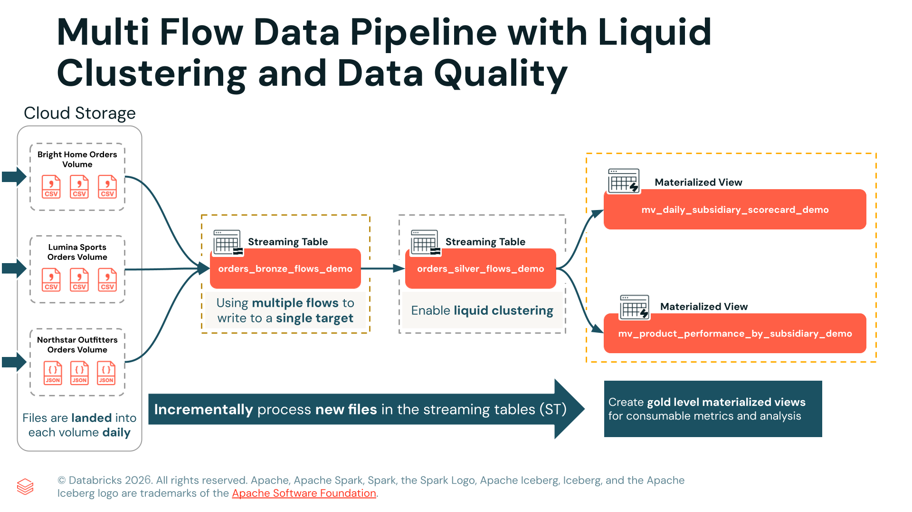

Section 3 · Data Transformation and Modelling · Quelle: Kurs 5, Kapitel 1–2
Bisher kannte man aus den Grundlagen einer Lakeflow Declarative Pipeline vor allem den einfachen Fall: Eine Streaming Table oder Materialized View wird mit genau einer SELECT-Abfrage aus genau einer Quelle befüllt. Sobald mehrere Quellen in ein gemeinsames Ziel einfließen sollen – etwa Bestelldaten dreier Tochtergesellschaften, die jeweils in unterschiedlichen Formaten abgelegt werden – reicht dieses einfache Modell nicht mehr aus. Genau hier setzt das Konzept des Flows an, das in fortgeschrittenen Pipelines zum zentralen Baustein wird.
Ein Flow ist die kleinste Ausführungseinheit einer Deklarativen Pipeline. Er besteht immer aus zwei Teilen: einer Query (der SQL- oder DataFrame-Logik, die bestimmt, welche Daten gelesen und wie sie transformiert werden) und einem Target (der Streaming Table oder Materialized View, in die das Ergebnis geschrieben wird). Jeder Flow verwaltet dabei seinen eigenen Checkpoint, über den der Fortschritt der inkrementellen Verarbeitung nachverfolgt wird. Wird ein Flow umbenannt, verliert er seinen Checkpoint und beginnt beim nächsten Lauf wieder von vorne – ein Detail, das bei Refactorings leicht übersehen wird, aber in der Produktion teuer werden kann.
Meistens entsteht ein Flow implizit, sobald eine Streaming Table oder Materialized View definiert wird – man spricht dann von einem Default Flow, der automatisch den Namen seiner Zieltabelle erbt. Wird hingegen zusätzlicher Schreibzugriff auf eine bereits bestehende Tabelle benötigt, etwa weil eine zweite Quelle angebunden werden soll, definiert man einen expliziten Flow separat mit CREATE FLOW. Beide Varianten laufen unabhängig voneinander: Ein langsamer oder fehlgeschlagener Flow beeinflusst die übrigen Flows im selben Pipeline-Lauf nicht.
-- Default Flow: Tabelle und Flow entstehen in einem Schritt CREATE OR REFRESH STREAMING TABLE target_table AS SELECT * FROM STREAM source_table; -- Expliziter Flow: Tabelle wird separat definiert, -- der Flow schreibt anschließend gezielt hinein CREATE OR REFRESH STREAMING TABLE target_table; CREATE FLOW my_flow AS INSERT INTO target_table BY NAME SELECT * FROM STREAM source_table;
Sollen mehrere Datenquellen in dieselbe Tabelle einfließen, lassen sich beliebig viele explizite Flows auf dasselbe Target richten. Jeder Flow liest unabhängig von seiner eigenen Quelle, verarbeitet die Daten und hängt sie an die gemeinsame Zieltabelle an. Das folgende Beispiel aus der Demo-Pipeline zeigt drei Tochtergesellschaften (Bright Home, Lumina Sports, Northstar Outfitters), die jeweils eigene CSV- bzw. JSON-Dateien liefern, aber gemeinsam in eine einzige Bronze-Tabelle einfließen:
CREATE OR REPLACE STREAMING TABLE multi_flow_1_bronze.orders_bronze_flows_demo
(
subsidiary_id STRING,
order_id STRING,
order_timestamp STRING,
customer_id STRING,
region STRING,
country STRING,
city STRING,
channel STRING,
sku STRING,
category STRING,
qty STRING,
unit_price STRING,
discount_pct STRING,
coupon_code STRING,
total_amount STRING,
order_date STRING,
source_file STRING,
file_mod_time TIMESTAMP
)
COMMENT "Creates a single bronze streaming table with orders from all subsidiaries using multiple flows."
TBLPROPERTIES (
'pipelines.reset.allowed' = false
);
-- Flow 1: liest CSV-Dateien der Bright-Home-Volume
CREATE FLOW bright_home_orders_flow
AS INSERT INTO multi_flow_1_bronze.orders_bronze_flows_demo BY NAME
SELECT
CAST(subsidiary_id AS STRING) AS subsidiary_id,
CAST(order_id AS STRING) AS order_id,
-- ... weitere Spalten, alle als STRING gecastet ...
_metadata.file_name AS source_file,
_metadata.file_modification_time AS file_mod_time
FROM STREAM read_files(
'${bright_home_orders_source}',
format => 'csv',
header => true
);
-- Flow 2: liest CSV-Dateien der Lumina-Sports-Volume (identisches Zielschema)
CREATE FLOW lumina_sports_orders_flow
AS INSERT INTO multi_flow_1_bronze.orders_bronze_flows_demo BY NAME
SELECT ... FROM STREAM read_files('${lumina_sports_orders_source}', format => 'csv', header => true);
-- Flow 3: liest JSON-Dateien der Northstar-Outfitters-Volume
CREATE FLOW northstar_outfitters_orders_flow
AS INSERT INTO multi_flow_1_bronze.orders_bronze_flows_demo BY NAME
SELECT ... FROM STREAM read_files('${northstar_outfitters_orders_source}', format => 'json');
Bemerkenswert ist die Tabelleneigenschaft 'pipelines.reset.allowed' = false: Sie verhindert, dass ein versehentlicher Full Refresh die gesamte Bronze-Tabelle löscht – wichtig, weil hier Daten aus drei unabhängigen Quellen zusammenlaufen, die im Zweifel einzeln neu geladen werden müssten. Alle drei Flows casten sämtliche Geschäftsspalten konsequent auf STRING, damit unterschiedliche Quellformate keine Typkonflikte erzeugen – die eigentliche Typisierung erfolgt erst später in der Silver-Schicht.

Eine naheliegende Alternative wäre, die drei Quellen einfach per UNION ALL innerhalb einer einzigen Streaming-Table-Definition zusammenzuführen. Für inkrementelle Pipelines bringt das jedoch entscheidende Nachteile mit sich: Alle Quellen teilen sich dann einen einzigen Checkpoint, sodass das Hinzufügen einer vierten Tochtergesellschaft einen kompletten Full Refresh der gesamten Tabelle erzwingt. Zudem kann ein Fehler in einer Quelle den gesamten Ladevorgang blockieren, und die Nachverfolgung, welche Zeile aus welcher Quelle stammt, wird unübersichtlich. Das Multi-Flow-Muster löst all diese Probleme: Jeder Flow besitzt einen eigenen Checkpoint, neue Quellen lassen sich ohne Neuverarbeitung der Historie ergänzen, und Fehler bleiben auf den jeweiligen Flow beschränkt. Aus diesem Grund gilt Multi-Flow bei mehreren Quellen mit identischem Zielschema als die empfohlene Vorgehensweise gegenüber UNION.
Eine wichtige Einschränkung dabei: Data-Quality-Expectations (siehe Kapitel 3 und Kapitel 9 dieser Section) lassen sich nicht auf einzelnen Flows definieren, sondern ausschließlich auf der Zieltabelle selbst. Dadurch gelten dieselben Qualitätsregeln automatisch für alle Flows, die in diese Tabelle schreiben – unabhängig davon, aus welcher Quelle die jeweilige Zeile stammt.
Nachdem die Bronze-Tabelle die Rohdaten aus allen Flows vereint, folgt in der Silver-Schicht typischerweise eine Bereinigung samt Typisierung. An dieser Stelle lohnt sich häufig auch die Aktivierung von Liquid Clustering – dem modernen Nachfolger von Hive-Partitionierung und Z-Ordering, der in Section 6 (Troubleshooting, Monitoring and Optimization) ausführlich behandelt wird. Im Pipeline-Kontext genügt die Klausel CLUSTER BY AUTO direkt in der Tabellendefinition, damit Databricks anhand der tatsächlichen Abfragemuster selbstständig geeignete Clustering-Spalten wählt und die Datenlayout-Optimierung inkrementell im Hintergrund ausführt – ganz ohne manuelles OPTIMIZE.
CREATE OR REFRESH STREAMING TABLE multi_flow_2_silver.orders_silver_flows_demo ( subsidiary_id STRING, order_id STRING, order_timestamp TIMESTAMP, order_date DATE, -- ... weitere Spalten ... CONSTRAINT qty_valid EXPECT (qty >= 0) ON VIOLATION DROP ROW, CONSTRAINT total_amount_valid EXPECT (total_amount >= 0) ON VIOLATION DROP ROW, CONSTRAINT timestamp_not_null EXPECT (order_timestamp IS NOT NULL) ON VIOLATION FAIL UPDATE ) COMMENT 'Clean and standardize data from the multiple-flow bronze table' -- Liquid Clustering: Databricks wählt die Clustering-Spalten selbst CLUSTER BY AUTO AS SELECT subsidiary_id, order_id, TRY_CAST(order_timestamp AS TIMESTAMP) AS order_timestamp, TRY_CAST(order_date AS DATE) AS order_date, -- ... TRY_CAST für alle numerischen Spalten ... FROM STREAM multi_flow_1_bronze.orders_bronze_flows_demo;
Alternativ lassen sich mit CLUSTER BY (spalte1, spalte2) auch explizite Clustering-Schlüssel angeben, wenn die typischen Filterspalten bereits bekannt sind – etwa region und order_date bei regelmäßigen Auswertungen nach Zeitraum und Vertriebsregion. Ein Hybrid ist ebenfalls möglich: explizite Spalten als Startpunkt, während clusterByAuto zusätzlich aktiviert bleibt, damit sich das Layout mit der Zeit weiterentwickelt.
| Ansatz | Wann sinnvoll |
|---|---|
CLUSTER BY AUTO | Neue Tabellen oder unklare Abfragemuster – Databricks lernt aus der Query-Historie |
CLUSTER BY (spalten) | Bekannte, stabile Filterspalten – volle Kontrolle über das Datenlayout |
| Hive-Partitionierung (Legacy) | Nur noch für Sonderfälle wie DSGVO-Löschungen relevant, siehe Section 6 |